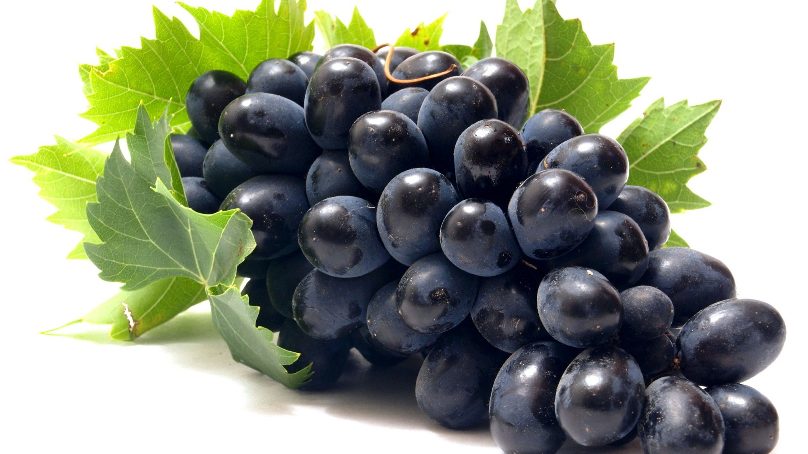
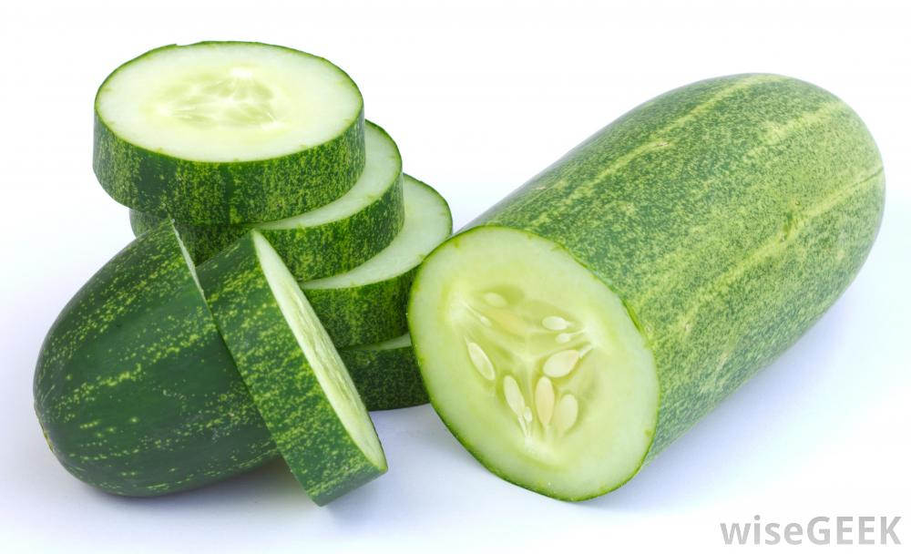
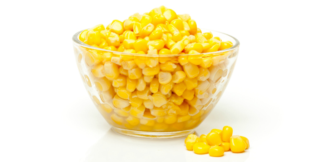
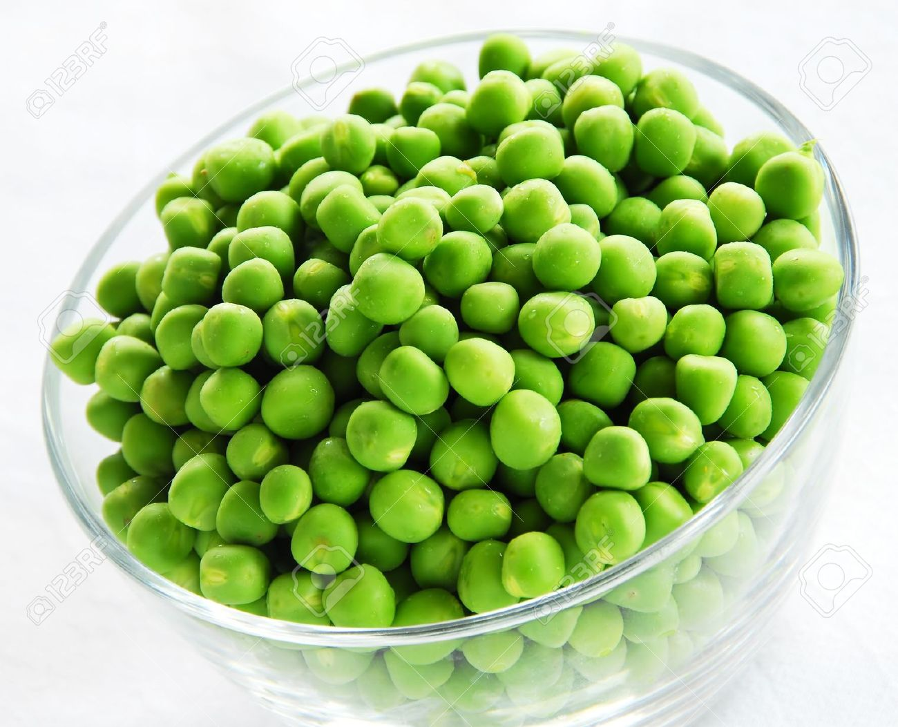
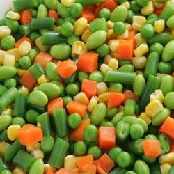
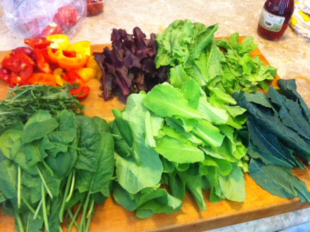

POMEG-PUNCH
Hey hi!! I am pomegranate.U can call me pomeg.U wanna look up how to make my punch!here we go.
Add 1 ginger piece and 1 tablespoon of honey to 1 cup full of my seeds
METHOD
Blend my seeds with that ginger piece.Strain out the puply stuff.Take up the juicy content , add on honey and fil ur tummy!!
BENEFITS
Heals and recovers the drop down energy levels in u.

PURPLE GRAPY
Use the black grapes to get a purply drink.
Add 1 tablespoon of white palm sugar powder and a pinch of salt to 1 cup/glass of black grapes
METHOD
Blend the black grapes.Use the strainer to strain out the pulp.Add salt,sugar powder,1/4th cup/lass of water,mix up well and fill ur tummy.
BENEFITS
Very beneficial to eye sight.

CUCU-LEMON SQUASH
Hey lets get to know the delicious mix up of cucumber with lemon.
Add 1/2 tablespoon of lemonjuice and a pinch of black salt to a cucumber(unpeeled)
METHOD
Grind the cucumber and strain the juice.Add up lemon juice and salt as required.Make your taste buds more tasty!!
BENEFITS
Hydrates,Cleanse the body, acts as a coolant.
SPINACH SOUP
Wanna benefit the taste of spinach.Dive into this.Wanna become POPOYE!!
Add 3 drops of lemon juice,some paste of fried gram powder,a pinch of salt,a little bit of pepper powder to 1 cup of cut spinach leaves.
METHOD
Boil spinach leaves in boiling water and cook that in oven for 3 minutes with 3 to 4 drops of lemon juice, so spinach colour remains same,bring that to boil while adding friedgram paste and salt.Then add required amounts of lemon juice and pepper powder.Serve it!
BENEFITS
Rich in Vitamin A,C,E,K,B6.

TANGY-CORN SOUP
Get the flavours of delicious corn.
Add 2 tablespoons of corn flour,a pinch of salt,1/4 tablespoon of pepper powderto1 cup of frozen corn kernels.
METHOD
Cook the frozen corn kernels till that gets soft in oven.Bring that to boil.Add required amount of salt and lemon juice, pepper powder. Add corn flour paste if required.
BENEFITS
Serve hot.It is a rich source of many vitamins and minerals.

'PEAS'Y SOUP
A soup bowl of peas and peace!!!
Add 1/2 tablespoon of lemonjuice and a pinch of salt to a cup of frozen green peas.
METHOD
Cook the frozen green peas using the microwave oven.Cool them in the normal temperature.Grind them and make them into paste.Add a pinch of salt and lemon juice to that paste.
BENEFITS
Serve either hot or cold.Good source of B1,B2,B6,C,K.
DOUBLE C'S
Carrot dishes are awaiting for u!!!
INGREDIENTS
- Grated carrot-3 tablespoons
- Cut coriander leaves-2 tablespoons
- Grated cucumber-2 tablespoons
- Pomegranate seeds-1 cup
- Cut pudina leaves-6 leaves
- Cut curry leaves-6 leaves
- Green chili paste-1/4 table spoon
- Lemon juice-1/2 spoon
METHOD
Peel the skins of all the veggies.Grate carrot,cucumber and mix them all in a bowl.Flavour them with green chili paste,lemon juice,salt.Garnish with grated coconut.
BENEFITS
Multi vitamin rich food.

ROOT DELIGHT
Start with the roots.
Add 1/4 table spoon of red chilli powder and a pinch of salt to 1 grated carrot and 1 grated beetroot.
METHOD
Just add up given ingredients and have.
BENEFITS
Acts as a blood purifier and also a good source of Vitamin-A.

GO VEGGIE
Get a veggie experience now.
Add 1/4 tsp of pepper powder,a pinch of salt ,roasted white gingelly seeds to a grated carrot,a grated cucumber and pomegranate seeds.
METHOD
Just add up all the ingredients and fill up your tummy.
BENEFITS
Acts as a coolant.
LEAFY MIX
Delightful mix of various leafy vegetables.
- cabbage slits-1 cup
- deseeded tomato slits-1 cup
- pepper powder-1/4 teaspoon
- dry mango powder-1/2 tsp
- chat masala powder-1/4 tsp
- gingelly seed powder-1/4 tsp
- salt-a pinch of it
METHOD
Add up all the ingredients together and have that.
BENEFITS
Its K-vitamin rich and very good blood purifier.

EXOTIC SALAD
Feel the exotic on the tongue!!
- finely chopped cucumber-1
- finely chopped raw mango-1/2 cup
- green chilli paste-1/2 teaspoon
- sweet chutney-1 tsp
- lemon juice-1 tsp
- mint leaves-almost 10
- salt-a pinch of it
- pine apple-2 slices
- apple-1
- pomegranate-1/2 cup
- green grapes-15
- red,yellow,green capsicums-1 cup
- deseeded tomato-1
METHOD
Mix all the given ingredients.
BENEFITS
rich in vitamins A and C.